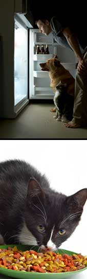

Amidst pet food recall news that seems to change and expand by the week, many pet owners are confused and frustrated about what's best to feed their beloved cats and dogs. Phil Brown, a respected veterinarian who also has almost two decades of experience in developing pet foods, most recently helped develop a line of cat and dog foods for Newman's Own Organics. He says it's our charge to feed our animals the best foods we can, and the recent recalls have 'raised people's consciousness of the value of organic and natural foods.'
Q: What's your current understanding of the problem that has caused these recalls?
At this point the thought is that melamine, which is used to make plastics and is a fertilizer in other parts of the world, contaminated wheat gluten which was shipped into the United States and used in some pet foods. It's my understanding that wheat gluten is the only ingredient involved, that's the commonality among all the recalled foods.
Q: Why is wheat gluten used in these foods?
Wheat gluten works as filler. In biscuits it's used to keep them from falling apart; it gives them stability. The wheat has some nutritional value, but wheat gluten is protein and it's primarily used as a filler or binder. The wet foods that were affected were the gravy, chunky-types, and wheat gluten gives them texture.
Q: Last week we saw the first dry food recalled, a cat food - why was wheat gluten used in it?
That's sort of a prescription food for cats with urinary tract infections. The wheat gluten was a source of protein and carbohydrates.
Q: How could the melamine end up in the wheat gluten?
Well, it's used as a fertilizer. I think they must've sprayed it on the wheat and it came over in a shipment from China. I believe they had seen crystals on the wheat gluten.
Q: Is melamine allowed as a fertilizer in the United States?
No, I'm positive it's not.
Q: So with all this in the news, what's the first thing a pet owner should do?
The most rational thing to do is to check the ingredients list on the food, see if it lists wheat gluten. If you see wheat gluten, don't feed it to them.
Q: If you see your pet's food on the recall lists, what's the first thing you should do?
Immediately stop using it. Stop, it's not worth the risk.
Q: Soon after the recall news first broke, there was suspicion of a rat poison as the cause?
Yes, a rat poison called aminopterin. That was a mistake ? I believe an official in New York was the first one to identify that, but then no one could duplicate his findings. They analyzed it in three different laboratories and no one could find aminopterin. That didn't help the situation. That's when they started looking for something else.
Q: So what's next? There's still plenty of confusion about whether the melamine is the actual cause of the problem, and how exactly it ended up in the wheat gluten. Does this speak to a larger problem of what we're putting into pet foods?
It's not much of a different problem than the recent spinach and lettuce recalls. What I'm still confused about is the actual cause of death. They found melamine in the wheat gluten and in the deceased cats' urine. But it's not supposed to be toxic in the amounts the animals got. I feel comfortable that what caused this is melamine that was used as a fertilizer and got into the wheat gluten. I would feel more comfortable if I knew how it caused the few animals to die. At the end of the day, we still don't have a definite answer on how melamine affects an animal's physiological system.
Q: Have you seen any animals affected by this?
I haven't. I know a lot of vets are busy doing kidney tests because the signs are pretty nonspecific. Only 16 deaths have actually been attributed to this, but I'm sure there are thousands that believe their animal is sick because of this.
Q: What signs should pet owners watch their dogs and cats for?
There really aren't specific signs. But not eating, increased urination, lethargy, not feeling good, etc. You know when a pet doesn't feel good. But the key indicators are increased thirst and urination.
Q: What typically goes into the conventional, low-end pet foods, those that are cheap in price and quality?
Well, the first word you want to look for on labels is ?byproduct.' You don't want to see that. It can mean chicken legs, wings, beaks, feathers; it's really whatever is left over. The other thing they should look for is a form of meat as the first ingredient. If you see corn as the first ingredient, that's a red flag. It's more of carbohydrate mass, rather than a protein. Animals need amino acids, which they get from protein. I'm a big fan of chicken. I like chicken meal, not chicken by-product meal, but chicken meal, because it's a very concentrated source of amino acids.
Q: For those who would like to switch their pet to a new food, what's your advice for making that transition smooth?
Do it gradually over a seven- to 10-day period. Start out with your original food and add a little of the new stuff. Gradually change that ratio until, at the end of the 10 days, you're feeding all of the new food. Sometimes a little garlic powder helps, something that gives it a little aroma. This is the one time that I'll say you could add a little fresh steamed chicken.
Feel free to share your own thoughts and experiences by posting a comment below. And click here to read about two books that can help you learn much more about pet foods and nutrition.
|
 ISTOCKPHOTO Given the ongoing developments with pet food recalls, many pet owners are looking for better alternatives to feed their pets. Experts recommend avoiding any pet food that lists wheat gluten or 'byproducts' as an ingredient. |
|
|